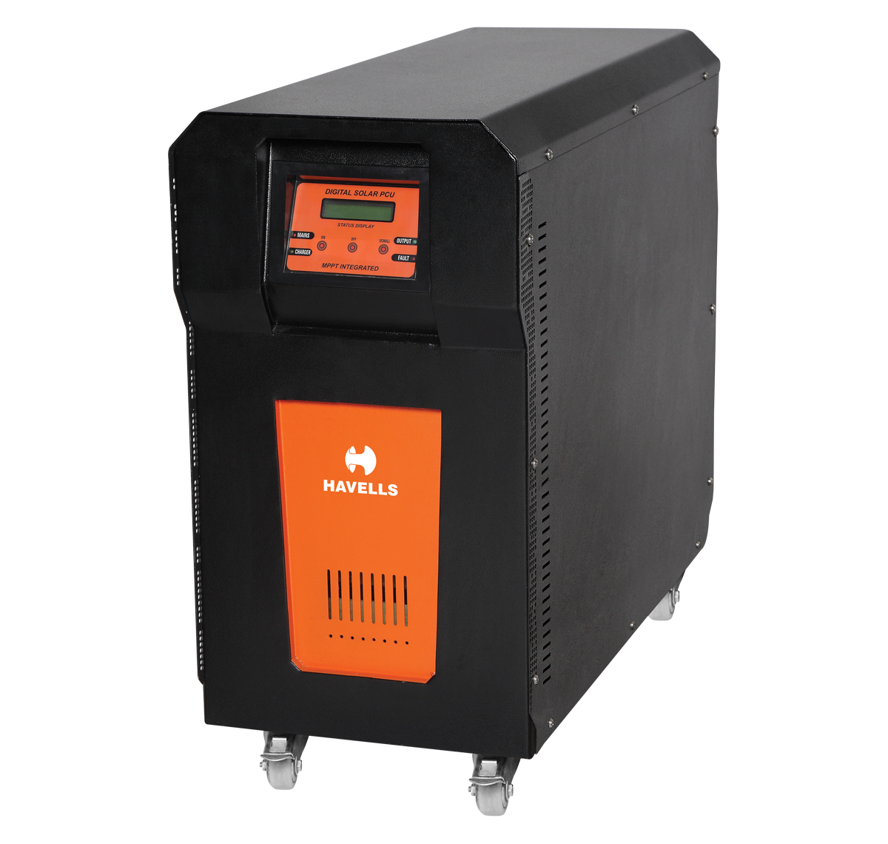
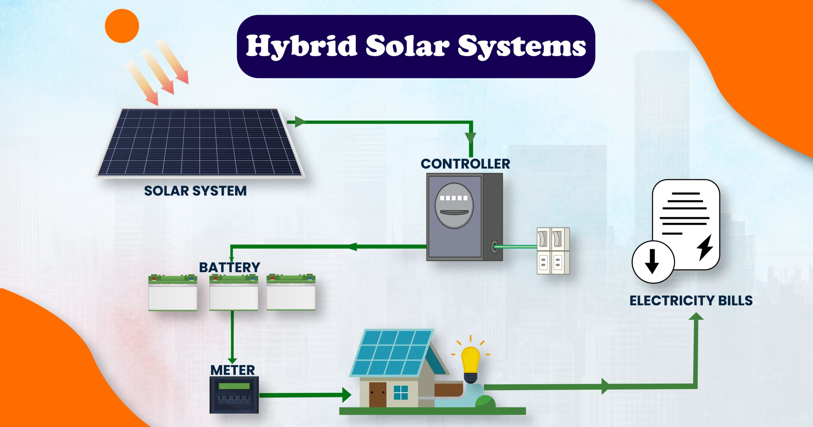
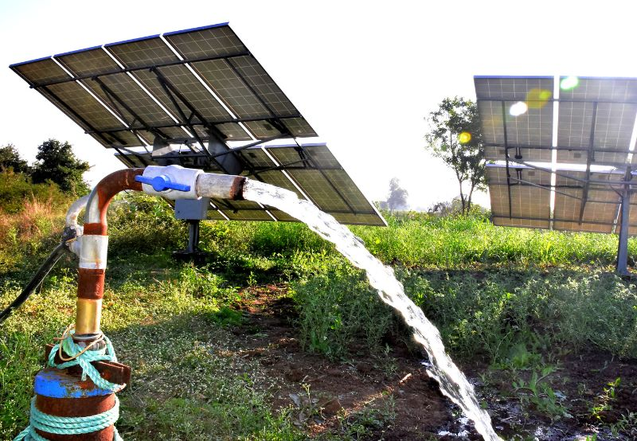

On-grid Solar Inverters
Grid-tied rooftop systems with no battery. Surplus power goes back to the grid and you earn net-metering credit. Best for homes and offices with steady DISCOM supply.
Get a quoteRooftop systems, agriculture pumps, atta chakkis and street lights. We design, install, register the subsidy, and stick around for service.
Grid-tied rooftop systems with no battery. Surplus power goes back to the grid and you earn net-metering credit. Best for homes and offices with steady DISCOM supply.
Get a quote
Stand-alone setups with lithium or tubular battery backup. Perfect for villages, farmhouses and remote sites with weak grid or no electricity connection at all.
Get a quote
Grid-tied with battery backup. Run fans, lights and the fridge through power cuts and still send surplus to the grid when the sun is out. Best of both worlds.
Get a quote
All-in-one and split-type solar street lights for village streets, society lanes, gates, parks and panchayat projects. Auto dusk-to-dawn with 2-3 night battery backup.
Get a quote
PV-powered submersible and surface pumps for irrigation. No diesel, no electricity bill, no waiting for power supply. Available in AC and DC options.
Get a quote
Solar-powered flour mills for villages and community kitchens. Runs entirely on solar during the day and saves serious money on diesel and electricity year-round.
Get a quote